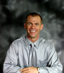

WHAT'S HAPPENING:
UPCOMING EVENTS:
Hope for Life Recovery (Living Free Small Groups) , Wed., Jan 7, 6:30 p.m. First book, Insight into Living Free
Food distribution at Ag Center, Wed, Jan 14 11:00 a.m. workers, distribution begins approximately 12:15.
No Women of Promise in January.
"Souper Bowl Sunday" Canned Soup Drive for the
Smith County Help Center
Sunday Jan. 3rd- Sunday Feb. 7th
THIS WEDNESDAY NIGHT:
Life Application Class - Adults
Kids Klass - 6th Grade and below
Youth Group - 7th Grade and above
MINISTRY OPPORTUNITY:
Care Ministry: Providing meals (on a rotational basis) to our families during times of need
MONTHLY OR OTHER EVENTS:
Youth Service (7th–12th Grades, monthly, 3rd Sunday a.m.)
Real Men’s Club (monthly, 2nd Tuesday, 6:30 p.m. )
Fellowship Breakfast (monthly, 1st Sunday, 9:30-10:45 a.m. )
Women of Promise (monthly, 3rd Tuesday, 6:30 p.m. )

Message from the Pastor
In the summer of 1989, the Lord spoke to my heart as clear as I have experienced, saying, "I want you to start a church in Carthage and share hope to your community." I immediately pursued this mission, and by August 11, 1991, held the first official church service at the current location. The primary purpose of our church is to spread a message of hope and to introduce people to the love of God, the foundation necessary to overcome life's obstacles. When we discover God's love, absolutely nothing can separate us from it, our lives are eternally impacted. Our church proclaims a non-condemning message, which focuses on what God has done for us instead of what we can do for God. We strive to be bridge-builders in our community and to be recognized, not by our doctrine, but by our love.
If you are without a church home, we invite you to be a part of Carthage Full Gospel Church. We are a family-oriented church with many events and fellowship opportunities. We place much effort in creatively and simplistically proclaiming a message relevant to the world today. We embrace traditional values, but do not limit ourselves to traditional methods. We are committed to improve the quality of life for our generation by sharing a message, which brings hope to all through God's unconditional love. We desire to be a "safe house for the battered, a sanctuary during bad times" and in "the moment you arrive, you relax; you're never sorry you knocked" (Ps. 9: 9-10). If this message stirs your heart, I pray you will join us in proclaiming the good news to the world..."The harvest truly is plenteous, but the laborers are few.” (Matt. 9:37)